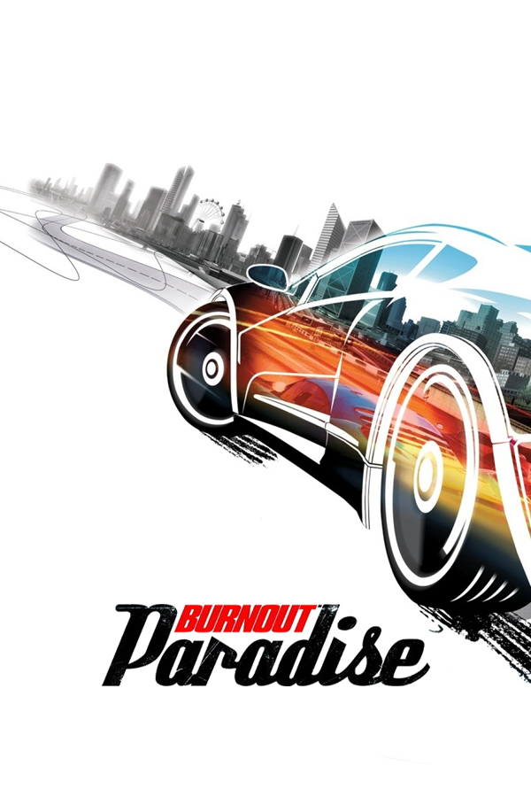

Burnout Paradise
Burnout Paradise
Details
|  | |
| Playtime | Not Played |
| Last Activity | 2/3/2016 15:36:22 |
| Added | 4/24/2025 1:30:35 |
| Modified | 4/30/2025 2:42:27 |
| Completion Status | Not Played |
| Library | Xbox |
| Source | Xbox |
| Platform | Microsoft Xbox 360 |
| Release Date | 2/5/2009 |
| Community Score | 80 |
| Critic Score | 85 |
| User Score | |
| Genre | Open world Racing |
| Developer | Criterion Games |
| Publisher | Electronic Arts |
| Feature | Controller Support Full Controller Support Multiplayer Single Player |
| Links | PCGamingWiki Official site HowLongToBeat IGDB SteamDB StrategyWiki MobyGames Wikipedia WSGF |
| Tag | Automobile Contemporary Direct control First-Person Motorcycle Realistic Real-Time RenderWare Third Person |
Description
Burnout Paradise is a 2008 racing video game developed by Criterion Games and published by Electronic Arts for PlayStation 3, Xbox 360 and Microsoft Windows. It was also released on the PlayStation Store and via Xbox Live Marketplace's Games on Demand. It was later added to the libraries of Greatest Hits and Platinum Hits titles and was made backward compatible with the Xbox One in November 2016. It is the first game in the Burnout series to be released on Microsoft Windows.
Paradise's gameplay is set in the fictional "Paradise City", an open world in which players can compete in several types of races. Players can also compete online, which includes additional game modes, such as "Cops and Robbers". Several free game updates introduce new features such as a time-of-day cycle and motorcycles. The game also features paid downloadable content in the form of new cars and the fictional "Big Surf Island".
The game received overwhelmingly positive reviews upon release, with aggregate score sites GameRankings reporting an average score of 88% and Metacritic reporting an average score of 88 out of 100. The game won several awards in 2008, with Spike TV, GameTrailers and GameSpot all awarding it Best Driving Game. Reviewers felt the game had an excellent sense of speed, and praised the open world gameplay, a first for the Burnout series. Burnout Paradise is considered by some to be one of the greatest video games ever made.
A remastered version, titled Burnout Paradise Remastered, which includes all downloadable content (except the Time Savers Pack) and support for higher-resolution displays, was released on 16 March 2018 for PlayStation 4 and Xbox One, and on 21 August for Windows via EA's Origin platform and has since been released on Steam. The online service for the original version of the game was permanently discontinued in August 2019. The remastered version for Nintendo Switch with refreshed online servers was released on 19 June 2020.
Gameplay
Burnout Paradise is set in an open-world environment. Players have the opportunity to progress at their own pace and level; the game, unlike others, is not actually set to a rigid gameplay framework. According to Alex Ward, creative director of the game at developer Criterion Games, this game is a "complete reinvention" of the Burnout series. He also said that "to create truly next-generation gameplay, they needed to create a truly next-generation game from the ground up". Initially day and night cycles were not included in the game but a software update entitled "Davis" added this element to the game. For the first time in the series, records are now kept on a player's drivers license, including statistics such as fastest time and biggest crash for every street in the game. Completing events raises the driver rank, which unlocks access to new cars.
In previous Burnout games, "Crash Mode" was a dedicated mode in which players were given multiple scenarios in which to cause the biggest crash. In Burnout Paradise, "Crash Mode", now called "Showtime", can be initiated at any time and place in the game. Showtime does differ from the previous incarnation of Crash Mode being that instead of crashing into a busy intersection and watching a crash play out, Showtime has bouncing the vehicle around for as long as possible to gain points. During a race players may now take any route to get to the destination. Races and other events are started by simply stopping at any of the traffic lights and applying the accelerator and brake at the same time. The game features the ability to customize race settings, such as traffic, race routes, and including/excluding cars based on their boost types.
Paradise's damage system has also been reworked. There are now two different types of crashes based on the car's condition after the crash. If the player's car manages to retain all four wheels and does not break its chassis, the player can drive out of the crash and continue playing; this is called a "driveaway". If a player's car loses any wheels, the engine is damaged too much from an impact, the car lands on its side or roof or lands outside of the game's map, the car is in a "wrecked" state and the player will have to wait until their car is reset. Cars dynamically compress and deform around objects they crash into.
Cars now have manufacturer and model names, which are loosely based on real-world cars. Cars may not be "tuned up" or customized apart from color changes, which may be done in real-time by driving through the forecourt of a paint shop, or by selecting the color during vehicle selection. Other real-time changes include driving through the forecourt of a gas station to automatically refill the vehicle's boost meter, and driving through the forecourt of a repair shop to automatically repair the vehicle.
Multiplayer
The online lobby system used by most video games has been replaced by a streamlined system known as "Easy Drive". While driving, players simply hit right on the D-pad and the 'Easy Drive' menu appears in the corner of their screen. From there, players are able to invite other players from their friends list. Once friends have joined the game, the host can select the event to play. A "Mugshots" camera feature is available for the PC via webcam, PlayStation 3 via a PS3-compatible webcam, Xbox 360 via Xbox Live Vision, PlayStation 4 via PlayStation Camera, and Xbox One via Kinect. When a player is taken down, their photo, or 'Mugshot', is shown to the aggressor, and vice versa. These photos can then be saved to the PC or console's storage device.
Development
The concept of Burnout Paradise came from director Alex Ward's experience playing open world games, specifically Crackdown, Test Drive Unlimited and Mercenaries: Playground of Destruction. Ward found that with a title like Mercenaries the game's world provided more entertainment than the developers likely planned and gave him a sense of freedom in playing around with inconsequential elements of the game. He wanted to take this idea into Burnout Paradise: "My philosophy was that if me and you both played it for three hours, we'd both do different things". By focusing on discovery and exploration, the game ended up being a racing game without any defined tracks, a novel element at the time, which has since influenced several other racing game developers in their approaches. Ward also wanted to develop the game as a social platform, leading to some of its design choices for multiplayer formats.
Ward, in an interview in 2018, noted the difficulty he had in convincing Electronic Arts to follow his vision. The Burnout series at the time was already seen as a less lucrative property compared to the Need for Speed series by EA, and further, Ward found that EA was not amendable to the open world idea he presented. Ward took steps that he could to make Burnout Paradise a desirable game prior to its release to show his superiors that his ideas were sound, which proved out when the game sold more than one million copies within the first three months of release.
Updates
Burnout Paradise has undergone significant changes since its initial release. These have been implemented through several free patches and downloadable packs. In 2008, the first major update, codenamed "Bogart", fixed several glitches and was scheduled to be released on 24 April. It was made available to Xbox 360 users on 18 April and to PlayStation 3 users on the originally scheduled date of 24 April, but this prevented store exclusive cars from being obtainable.
The "Cagney" update was released on schedule on 10 July for PlayStation 3 and on 4 August for the Xbox 360. The update introduced three new Freeburn multiplayer modes: Online Stunt Run, Marked Man and Road Rage. Online Stunt Run involves up to 8 players who simultaneously compete for the highest stunt score within 2 minutes. Road Rage features two teams; one must race to a checkpoint while the other tries to stop them through takedowns. Marked Man is like a game of tag, with one player as the Marked Man who cannot see the other players and has no boost. In addition there are 70 new online challenges. These new challenges are different from Free Burn challenges, being timed. Timed challenges start once all players gather at a point of interest. The players then must all complete an objective within a certain time, such as jumping a ramp. "Cagney" also brought custom soundtracks and 1080i support to the PlayStation 3 version.
An update in which involved motorbikes and night-day cycles appear in the Bikes Pack (originally codenamed the "Davis" update), along with tailored locations, challenges and game modes. The update featured a new dynamic weather system, two starter bikes in the player's junkyard, 70 new bike-only challenges, and special "Midnight Rides" challenges that appear only at night. The Bikes pack was released on 18 September on both the PlayStation 3 and Xbox 360.
On 25 September another update was made available which introduced support for the PlayStation 3 trophies system. Criterion Games originally stated that the trophies could be awarded retroactively to players who had already made certain achievements, but when the update was released they said that this had proved to be impossible and that users would have to start a new game in order to achieve some of the goals. Later on February 5, 2009, Criterion released the free 1.6 update, which included the addition of an in-game browser for the PC and PlayStation 3 versions, which gave users access to the Criterion Games Network. An in-game store was also added to all versions which allowed users to purchase content from within the game. Tweaks were also made to the vehicles (not including the freeburn exclusives) to steer the game more toward beginners and casual players. The stats of all of the cars were lowered, and the beginning cars were changed specifically to make them control better, and harder to crash. Events were also made easier to compensate for the vehicle changes.
Burnout Paradise is the first game in the series to be released for the PC. Criterion made use of existing graphics technology and introduced enhanced visuals and the ability to play the game across multiple monitors to enhance widescreen playing. Players can link three 4:3 monitors to play in a Polyvision aspect ratio. PC users are also able to download a trial version of the game for free. It includes the entire map and three cars but will expire after thirty minutes. All saved data will be carried over if the user decides to purchase the full game.
Marketing and release
A demo was made available in December 2007 for both PlayStation 3 via PlayStation Store and Xbox 360 via Xbox Live Marketplace. From January 4 through 14, Criterion raised the maximum number of players for the online Freeburn in the Paradise demo to 8 players (online play for the demo has since been shut down completely). With it, a total of 13 new Freeburn challenges were made available for players to play. In 2008, Paradise was made available for download on the PlayStation Store. Upon installation and first execution, all updates are downloaded and installed, which allows the player to have the latest version of Burnout Paradise.
Burnout Paradise features in-game advertisements for a number of brands, including Burger King, JL Audio, Nvidia, Gillette, Vizio, CompUSA and EVGA. From 6 October 2008, in-game billboards featured ads for the then-United States Democratic presidential candidate Barack Obama. Electronic Arts confirmed that the Obama campaign paid for the advertisements, marking the first time that a United States presidential candidate has bought in-game advertising. The Obama campaign ran only on the Xbox 360 version of the game.
The Xbox 360 version of Burnout Paradise was made available for backward compatibility with the Xbox One in November 2016. On 16 December, it was made available to Xbox Live Gold members for free until 31 December.
Criterion has disabled the optional online features for the original releases in August 2019.
Burnout Paradise Remastered
A remastered version of Burnout Paradise was released for PlayStation 4 and Xbox One consoles on 16 March 2018; a version for Windows was released for Origin Access subscribers on 16 August and was fully released on 21 August via Origin platform.
The remaster contains all the previously released downloadable content, except for the Time Savers Pack (a DLC pack that unlocks all vehicles in the game without the need to progress through single-player), and support for higher-resolution monitors (up to 4K resolutions) with 60 frames per second support. A version for Nintendo Switch was released on 19 June 2020. Unlike the original, the Remastered version does not have real life in-game advertisements and are instead replaced by fictional ones.
Downloadable content
In addition to the free updates, Criterion has released several optional, premium packs that add content like new cars, areas and modes. The first update was the "Burnout Party Pack" and launched on 5 February 2009 in North America and the United Kingdom. It focuses on hotseat multiplayer gameplay, which offers a Freeburn Challenge-like setting but for players on the same console, who pass a single controller between players to complete challenges. The challenges are split into 'Speed', 'Stunt' and 'Skill' with up to 8 rounds and up to 8 players can play at once. Criterion also announced the combo pack Burnout Paradise: The Ultimate Box that launched around the same time which contains the original game, plus the Cagney, Bikes, Party pack and Update pack all in the same package which contained "a mountain of new refinements".
The first premium content pack called "Legendary Cars" featured four cars inspired by famous vehicles from film and television: the Jansen P12 88 Special (based on the DeLorean time machine from the Back to the Future films), the Hunter Manhattan Spirit (based on the Ecto-1 from the Ghostbusters films), the Carson GT Nighthawk (based on KITT from the television series, Knight Rider), and the Hunter Cavalry Bootlegger (based on the General Lee from the TV series The Dukes of Hazzard). The Legendary Cars pack was released on 19 February 2009 for the PlayStation 3 and the Xbox 360, and later in 2009 for the PC.
The second one is "Toy Cars" pack. It features a collection of new vehicles designed with a "toy car" aesthetic, although modelled as full-size cars. The Toy Cars pack has been released in three packs. The full pack offers all toy cars along with the Nakamura Firehawk, a toy motorcycle, while the others split the content into two parts, minus the Firehawk.
On 12 March 2009, the "Boost Specials" pack was released. It featured two cars: the Carson Extreme Hotrod and the Montgomery Hawker Mech. The Carson was described as the fastest car in the game and featured a 'locked' boost; the car continues to boost until it is brought to a stop in any manner. The vehicle dynamics system were rewired so that the Carson performs more realistically than any other car in the game. The Montgomery Hawker Mech also featured a unique boost system, which allows the player to willingly switch between the three different boost types at the touch of a button.
In 2009, Criterion released "Cops & Robbers" on 30 April for PlayStation 3 and Xbox 360. The content does not involve AI Police patrol cars but instead borrows from the Pursuit modes of older Burnout games, notably Burnout 2: Point of Impact. Players are split into teams, the Cops and the Robbers. Teams attempt to return gold bars to their respective bases to score points. Every Paradise car (except Carbon and Premium DLC cars) receives a Police livery with the content.
Originally announced as the "Eastwood pack coming in Fall 2008", the expansion known as "Big Surf Island" was released on 11 June 2009. Design for the island was guided by the principle of "if you can see it, you can drive it". The island puts emphasis on the playground aspect of Burnout. The developers mentioned that in their telemetry they noticed that players congregate in areas of Paradise City that lend themselves to stunt-driving, and so the idea was to create an entire island to accommodate player desire. Big Surf Island also features new vehicles, which includes the Carson Dust Storm buggy, a car tailor-made for stunts. In addition to the Dust Storm buggy two specially featured cars, the Hunter Olympus "Governor" and the Carson Annihilator Street Rod are also included. The unlockable cars also include toy versions of all four "Legendary Cars" pack vehicles and a special Jansen P12 Diamond awarded once all 500 freeburn challenges were completed. It features several new events, billboards, smash gates, and mega jumps. New Trophies and Achievements were also added along with a new 'Big Surf Island License' to obtain.
Reception
Critical reception
Upon release, Burnout Paradise was met with very positive reviews, according to review aggregator Metacritic.
Reviewers praised the game's open world, stating "Burnout Paradise is an amazing open-world racing game that stays true to the Burnout legacy", but that the large world may "feel a little daunting at first". New gameplay mechanics such as gas stations and body repair shops were also praised which "mitigate potential frustration when the heat is on". Hyper's Daniel Wilks commends the game for its "great sense of speed and things that go boom". IGN's Chris Roper praised the vehicle unlock system, which gives the player a new vehicle with each license, and also gives the player the opportunity to "take down" certain vehicles, which earns the player a reward if completed. He further lauded the game as "controlled chaos". The Guardian's Keith Stuart added that the game "feels incredibly good to drive".
Some reviewers were disappointed that there was no option to restart a race or event. Instead the player had to either fail the event, or cancel the race by bringing the vehicle to a stop for a few seconds, and then return to the specific place on the map to try that particular race or event again. Criterion responded to this criticism by stating that they don't feel that this is a problem and that adding a "retry" option would introduce loading screens, which they "hate with a passion". Despite this, the option to restart an event was later added to the game via a free software update. Eurogamer found DJ Atomika, the game's guide, to be "instantly dislikeable".
The Remastered release was met with similarly positive reviews, albeit slightly less than the original release. Metacritic gave the PlayStation 4 version a score of 82 out of 100, and the Xbox One version a score of 79 out of 100.
Paradise won several awards in 2008, with Spike TV, GameTrailers and GameSpot all awarding it Best Driving Game. Additionally, Paradise won GameSpot's award for Best Downloadable Content in 2008. During the 12th Annual Interactive Achievement Awards, the Academy of Interactive Arts & Sciences awarded Burnout Paradise with "Racing Game of the Year".
Use in academia
Burnout Paradise has been the subject of several academic papers investigating a range of fields, often connected to the title's intensity and need for fast reaction time. These include studies on gamer cardiology, phenomenological correspondence and control abstraction and computer game pedagogy.